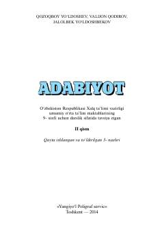

A99-sinf o'quvchilari uchun o'zbek adabiyoti fani bo'yicha rasmiy darslikning ikkinchi qismi.
Mazkur darslik umumiy o'rta ta'lim maktablarining 9-sinfi uchun mo'ljallangan bo'lib, o'zbek adabiyoti tarixi, mumtoz va jadid adabiyoti namoyandalarining hayoti hamda ijodini o'rganishga bag'ishlangan. Kitobda Cho'lpon, Alisher Navoiy, Zahiriddin Muhammad Bobur va Abdulla Qodiriy kabi ulug' adiblarning asarlari tahlil qilinadi. Nashr o'quvchilarning adabiy-estetik qarashlarini shakllantirishga xizmat qiladi.